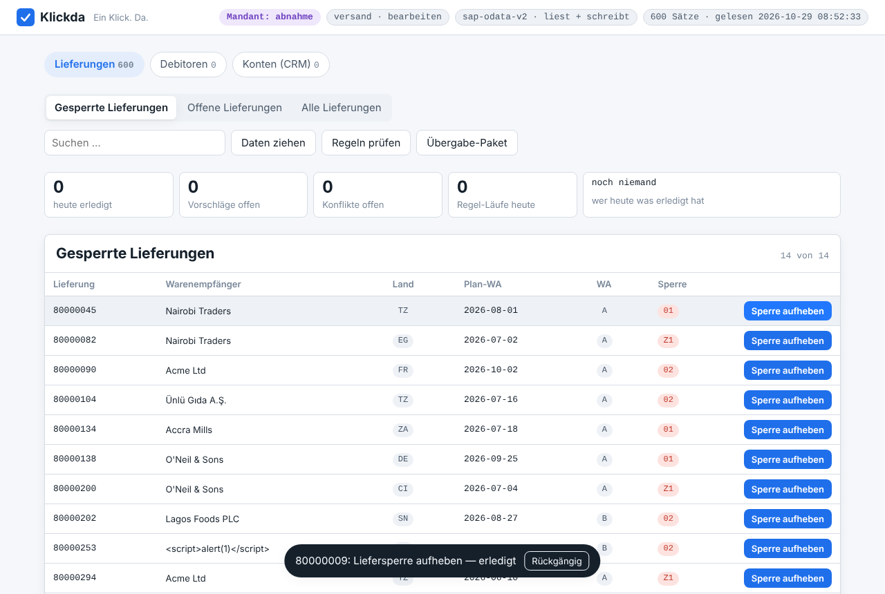

Daten ziehen
Der Konnektor liest die Entität per OData seitenweise in einen lokalen Spiegel. Jeder Satz trägt Mandant, Rohsatz und den letzten Lesezeitpunkt. Nichts verlässt das Haus.
Arbeits-Cockpit für SAP und Business Central
Klickda liest Ihre Geschäftsdaten per OData auf den Arbeitsplatz, zeigt, was heute fällig ist, und schreibt den Arbeitsschritt mit einem Klick zurück ins System — geprüft, protokolliert, rückgängig machbar. Kein Wechsel in die ERP-Maske, kein Schatten-Excel.
Oder erst ansehen, wie ein Klick aussieht ↓
Eine gesperrte Lieferung, ein Knopf „Sperre aufheben", ein Protokolleintrag — und ein „Rückgängig", das die alte Sperre wieder setzt. Keine Nachfrage, kein Formular.

Der Konnektor liest die Entität per OData seitenweise in einen lokalen Spiegel. Jeder Satz trägt Mandant, Rohsatz und den letzten Lesezeitpunkt. Nichts verlässt das Haus.
Sichten, Spalten und Suche kommen aus dem Workflow-Paket Ihres Hauses. Die Liste zeigt, was anliegt — ohne das ERP mit jeder Abfrage zu belasten.
Jeder Arbeitsschritt ist ein Kommando mit Vorbedingung, Änderung und Gegenkommando. Der Klick ist die Bestätigung, das Protokoll die Quittung.
Schreiben ins ERP ist Vertrauenssache. Deshalb kann Klickda weniger als ein Makro — und genau das ist der Punkt.
Es gibt keinen freien Schreibzugriff aus der Oberfläche. Nur ein registriertes Kommando geht hinaus, und nur, wenn seine Vorbedingung auf dem frisch gelesenen Satz gilt.
Geschrieben wird mit dem ETag des frischen Satzes. Hat jemand dazwischen geändert, zeigt Klickda vorher und jetzt — und schreibt nichts. Nie „Last Write Wins".
Ein deterministischer Idempotenzschlüssel aus Kommando, Satz und Ausgangsstand macht den zweiten Klick wirkungslos — auch bei Netzabbruch und Wiederholung.
Jeder Schritt steht hash-verkettet im Protokoll: eingereiht, erledigt, Konflikt, verworfen, rückgängig. Eine nachträgliche Änderung fällt auf.
Lesen, bearbeiten, verwalten — ein Kommando trägt die nötige Rolle, der Server weist ab und protokolliert. Der Mandant steht in jeder Abfrage, nicht nur in der Anzeige.
Die ersten Wochen laufen rein lesend. Der Rückweg kommt mit einem Feld, einer eigenen Rolle im Zielsystem und dem Protokoll auf dem Tisch der IT — bevor der erste echte Klick fällt.
Eine Regel findet, was zu tun ist. Ein Mensch gibt frei. Beides läuft durch dieselbe Prüfung wie der Klick.
Was Klickda für Sie automatisiert, gehört Ihnen. Sie entscheiden, wo es langfristig läuft.
Klickda als Arbeitsplatz-Lizenz, Ihre Workflow-Pakete gepflegt vom Werk. Kündbar zum Monatsende.
Je Automatisierung ein Übergabe-Paket: Prozessmodell für n8n, BPMN und Power Automate, Spezifikation mit dem Code jeder Bedingung, Ihr Protokoll als CSV. Nachbau im eigenen System — sukzessive, nach Rücksprache, durch Sie oder durch das Werk.
Eigene Software, konzipiert und gebaut nach Architektur-Briefing. Klickda ist die Brücke, bis sie steht.
Das Übergabe-Paket ist immer verfügbar — ein Knopf in der Oberfläche, keine Rücksprache nötig. Preise je Arbeitsplatz, Konnektor und Übergabe auf Anfrage.
CSRF-Token und Sitzungs-Cookie aus dem Einzel-GET, ETag als If-Match, Folgeseiten sauber über den Proxy. Gegen ein nachgebautes Gateway mit genau diesen Kanten getestet.
OAuth über Entra-App, Company-Auflösung, GUID-Schlüssel, If-Match als Pflicht. Eigener Fake, eigener Durchstich.
Web API v9.2, Bearer-Token, GUID-Schlüssel, ETag als If-Match — nie ein Upsert durch die Hintertür. Eigener Fake, eigener Durchstich.
Die Basis der V4-Adapter und jedes weiteren Systems, das OData spricht. Ein Vertrag, ein Adapter je System, nie ein Umbau des Kerns.
Klickda wird offen gebaut: jede Version mit Tests gegen nachgebaute Gateways und einer Abnahme im echten Browser. Was hier steht, läuft.
Klickda entsteht im Raum Köln, gebaut von einem Wirtschaftsinformatiker und Ingenieur mit Jahren in Export, Logistik und SAP-Anbindung — aus dem Ärger darüber, dass ein BI-Werkzeug das Problem zeigt und die Lösung sechs Klicks entfernt in einer anderen Maske liegt. Rawkeep baut lokal-first, ohne Cloud-Zwang, mit deterministischen Prüfungen statt Versprechen.
Der Name Klickda ist ein Arbeitstitel; die Markenprüfung läuft.
Ein Pilot beginnt mit einem Bereich, einer Sicht und einem Feld: zwei Wochen lesend, dann der erste Rückweg mit eigener Rolle im Zielsystem. Sie brauchen dafür einen Ansprechpartner im Fachbereich und einen in der IT.
Rawkeep · Klickda